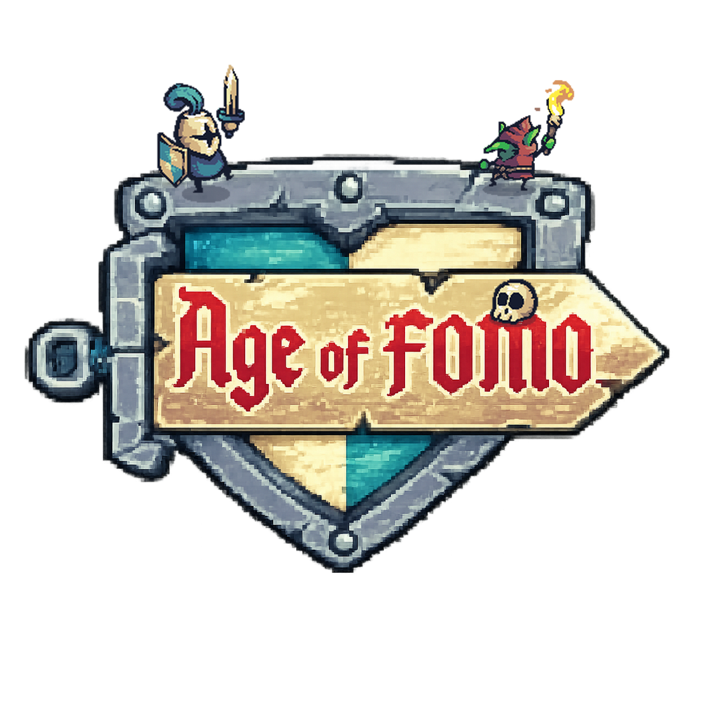

EN VIVO

Crónica perpetua de cuatro gremios · transmitida por el Ojo del Vigía
ESPECTADORES
1.204
SONIDO
ENGLISH
☰
MENÚ
⚔ Jugar la beta
🏠 Inicio
Redes oficiales
𝕏 Twitter / X
Cargando la isla…
OBSERVANDO
AHORA OBSERVANDO
El Ojo del Vigía sobrevuela la isla de Ámbar…
DEV
·